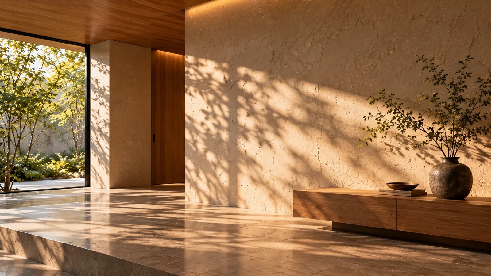
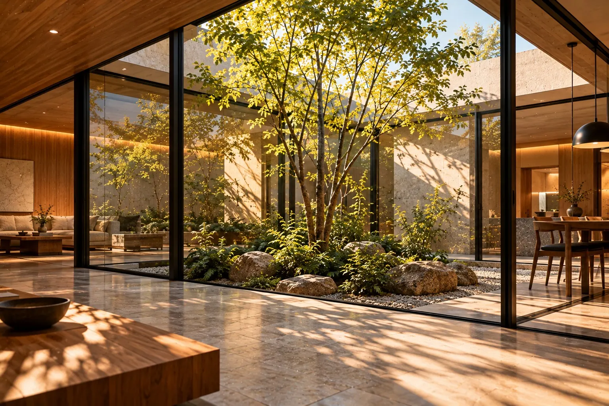
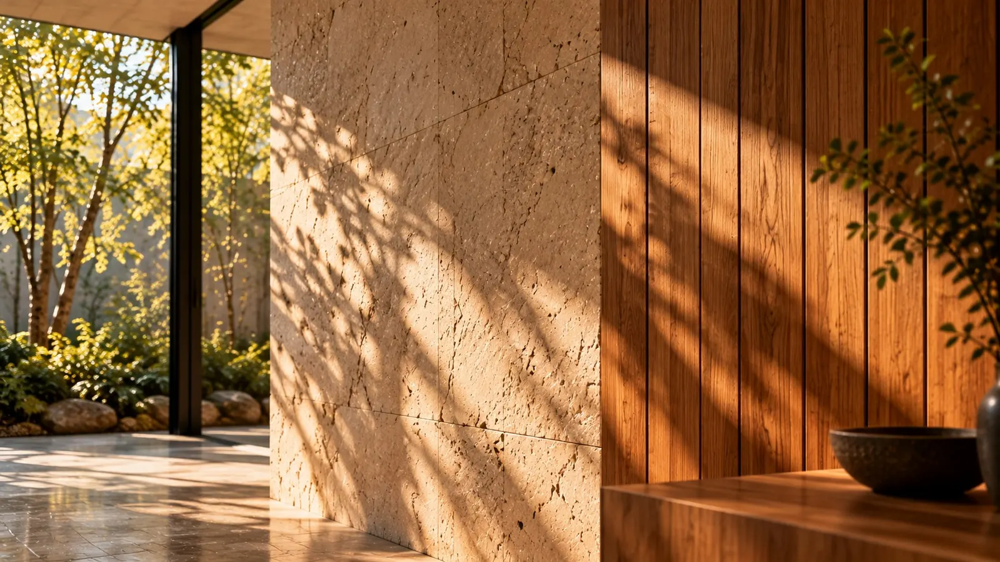
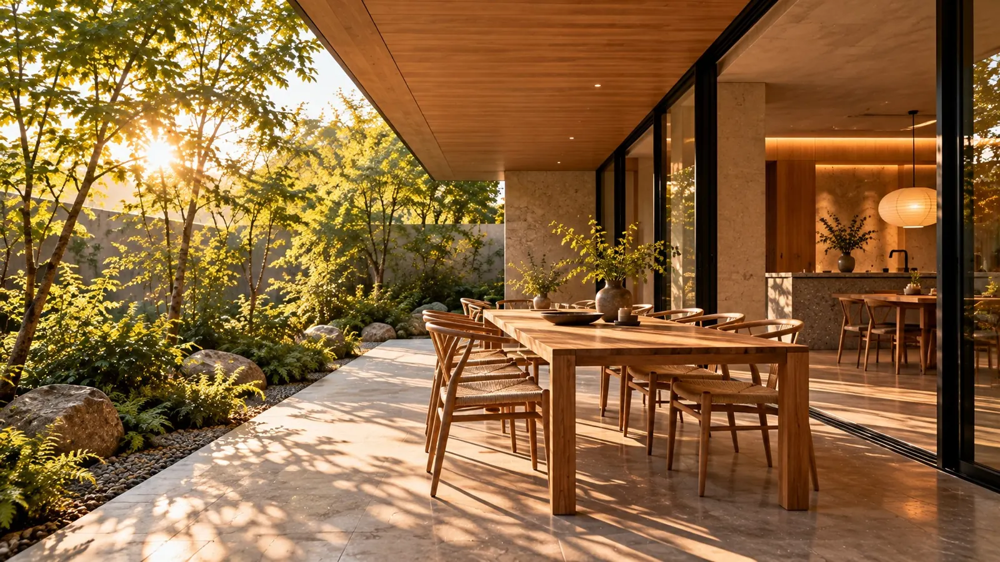

Concept RENOVA の考え方
住まいは、完成した日から育っていくもの。
余白・光・素材・暮らし。私たちが設計の前に考えていることを、4つの章でお伝えします。

新しくすることより、深くすること。
私たちは、すでにある空間の可能性を信じています。
築年数を重ねた建物には、新築にはない魅力が残っています。分厚い躯体、使い込まれた木、街との距離感。RENOVA は、そうした「時間」を設計の材料として扱います。

Space
間取りではなく、「順番」を設計する。
玄関から居間へ、居間から窓辺へ。部屋をいくつ並べるかより、どんな順番で空間を通り抜けるかが、住まいの印象を決めます。
暗い場所から明るい場所へ、低い天井から高い天井へ。小さな変化を重ねることで、同じ面積でも奥行きのある住まいになります。

Light & Material
素材は、光を受けて完成する。
同じ白い壁でも、朝の斜めの光と、夕方のやわらかな光では、まったく違う表情を見せます。私たちは素材を選ぶとき、必ず「どの光の中で見るか」を一緒に考えます。
手仕事の跡が残る塗り壁、木目の揃わない無垢材、ひとつずつ色の違う石。均一でないからこそ、光が当たったときに豊かな陰影が生まれます。
Concrete
躯体のコンクリート
Plaster
左官の塗り壁
Oak
無垢のオーク材
Stone
天然石

Life
特別な日より、何でもない毎日のために。
朝いちばんに光が入る場所で、コーヒーを飲む。帰ってきて、靴を脱いだ瞬間にほっとする。住まいの価値は、そうした毎日の小さな場面に表れます。
だから私たちは、図面を描く前に、住まい手の一日の過ごし方をうかがうことから始めます。
Contact
考え方に共感いただけたら、まずはお話を。
間取りの相談から、素材ひとつの相談まで。気軽にお問い合わせください（デモのため、実際には送信されません）。